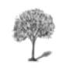

Ben Bir Ağacım
[Benim Adım Kırmızı’dan.
1591 yılında, İstanbul’da bir kahvehanede bir meddah
bir ressamın yaptığı ağacın ağzından konuşuyor.]
Ben bir ağacım, çok yalnızım. Yağmur yağdıkça ağlıyorum. Allah rızası için kulak verin şu anlatacaklarıma. Kahvelerinizi için, uykunuz kaçsın, gözleriniz açılsın, bana cin gibi bakın da size niye bu kadar yalnız olduğumu anlatayım.
1. Üstat meddahın arkasında bir ağaç resmi olsun diye aharsız kaba kâğıda alelacele resmedildiğimi söylüyorlardır. Doğru. Şimdi yanımda ne başka narin ağaçlar, ne yedi yapraklı bozkır otları, ne kimi zaman Şeytan’a ve insana benzeyen lüle lüle karanlık kayalar, ne de gökte kıvrım kıvrım Çin bulutları var. Bir yer, bir gök, bir ben, bir de ufuk çizgisi. Ama hikâyem daha karışık.
2. Bir ağaç olarak illaki bir kitabın parçası olmam şart değil. Ama bir ağaç resmi olarak herhangi bir kitabın sayfası değilim diye huzurum kaçıyor. Bir kitapta bir şey göstermiyorsam putataparlar ve kâfirler gibi resmimin duvara asılıp bana secde edilip tapılacağı geliyor aklıma. Erzurumi Hocacılar duymasın, bundan gizlice övünüyorum ve sonra utançla çok korkuyorum.
3. Yalnızlığımın asıl sebebi ise hangi hikâyenin parçası olduğumu benim de bilmemem. Bir hikâyenin parçası olacaktım, ama bir yaprak gibi düştüm oradan. Onu anlatayım:
AĞAÇTAN DÜŞEN YAPRAK GİBİ HİKÂYEMDEN DÜŞÜŞÜMÜN HİKÂYESİ
Acem Şahı Tahmasp, ki hem Osmanlı’nın baş düşmanıydı, hem de cihanın en nakışsever padişahıydı, bundan kırk yıl önce bunamaya başlayınca ilk iş eğlenceydi, şaraptı, musikiydi, şiirdi, nakıştı, bunlardan soğudu. Kahveyi de bırakınca kafası durdu; asık suratlı, karanlık ihtiyarların evhamlarıyla, Osmanlı’nın askerinden uzak olsun diye payitahtını o zaman Acem mülkü olan Tebriz’den Kazvin’e taşıdı. Daha da yaşlanınca bir gün cin çarpmasıyla buhrana kapılıp şaraba, oğlancılığa ve nakşetmeye tövbeler tövbesi dedi ki bu yüce şahın kahve zevkinden sonra aklıselimini de kaybettiğinin iyi bir ispatıdır.
Böylece, Tebriz’de yirmi yıldır cihanın en büyük harikalarını yapan mucize elli ciltçiler, hattatlar, müzehhipler, nakkaşlar çil yavrusu gibi şehir şehir dağıldılar. Bunların en parlaklarını, Şah Tahmasp’ın yeğeni ve damadı Sultan İbrahim Mirza, vali olduğu Meşhed’e çağırdı ve onları nakkaşhanesine yerleştirip Timur zamanında Herat’ta en büyük şair olan Câmi’nin Heft Evreng’inin yedi mesnevisini yazdırıp nakışlı, resimli harika bir kitap yaptırmaya başladı. Akıllı ve hoş yeğenini hem seven hem kıskanan, kızını ona verdiği için pişmanlık duyan Şah Tahmasp bu harika kitabı işitince haset etti ve öfkeyle yeğenini Meşhed valiliğinden Kain şehrine, sonra yine bir öfkeyle daha küçük Sebzivar şehrine sürdü. Meşhed’deki hattatlar ve nakkaşlar da böylece başka şehirlere, başka memleketlere, başka sultanların, şehzadelerin nakkaşhanelerine dağıldılar.
Ama bir mucizeyle Sultan İbrahim Mirza’nın harika kitabı yarıda kalmadı; çünkü hakikatli bir kitapdârı vardı. Bu adam atına biner, en iyi tezhibi yapan usta oradadır diye ta Şiraz’a gider, oradan en zarif nestalik hattı yazan hattat için iki sayfayı alır Isfahan’a götürür, sonra dağları geçip ta Buhara’ya çıkıp Özbek Hanı’nın yanında nakşeden büyük üstat nakkaşa resmin istifini yaptırır, insanlarını çizdirir; Herat’a inip bu sefer yarı kör eski üstatlardan birine otların ve yaprakların kıvrım kıvrım kıvrılışını ezberden nakşettirir; Herat’ta başka bir hattata uğrayıp resmin içindeki kapının üstündeki levhadaki yazıyı altın rika ile yazdırıp hadi yine güneye, Kain’e gider ve altı ay yolculuk ederek yarılayabildiği sayfayı Sultan İbrahim Mirza’ya gösterip aferini alırdı.
Bu gidişle kitabın hiç bitmeyeceğini anladılar ve Tatar ulaklar tuttular. Her birinin eline, üzerine işlenip yazılacak sayfayla birlikte sanatçıya istenilen şeyi tarif eden birer mektup verdiler. Böylece bütün Acem ülkesinin, Horasan’ın, Özbek memleketinin, Maveraünnehir’in yollarından kitap sayfalarını taşıyan ulaklar geçti. Ulaklar gibi kitabın yapımı da hızlandı. Bazen elli dokuzuncu yaprakla yüz altmış ikinci yaprak karlı bir gece kurt ulumalarının işitildiği bir kervansarayda karşılaşır, yarenlik ederken aynı kitap için çalıştıklarını anlayıp, odalarından çıkarıp getirdikleri sayfaların hangi mesnevinin neresine düştüğünü, birbirlerine göre yerlerini anlamaya çalışırlardı.
Bugün bitirildiğini kederle işittiğim bu kitabın bir sayfasında da ben olacaktım. Ne yazık ki soğuk bir kış günü beni taşıyarak kayalık geçitlerden geçen Tatar ulağın yolunu haramiler kesti. Önce dövdüler zavallı Tatar’ı, sonra harami usulünce soydular, ırzına geçip imansızca öldürdüler. Bu yüzden ben de bilmiyorum hangi sahifeden düştüğümü. Sizden ricam bana bakıp bunu söylemeniz: Acaba Leyla’yı çadırında çoban kılığında ziyaret eden Mecnun’a gölge mi olacaktım? Umutsuz inançsızın ruhundaki karanlığı anlatayım diye gecenin içine mi karışacaktım? Bütün cihandan kaçıp, denizler aşıp, kuşlar, meyvelerle dolu bir adada huzur bulan iki sevgilinin mutluluğuna eşlik etmek isterdim! Diyar-ı Hind’i fethederken başına güneş geçip günlerce burnu kanaya kanaya ölen İskender’in son anlarına gölge olmak isterdim. Yoksa oğluna aşk ve hayat nasihatları veren babanın gücünü ve yaşını ima etmeye mi yarayacaktım? Hangi hikâyeye mana ve zarafet katacaktım?
Ulağı öldürüp, beni yanlarına alıp dağ şehir demeden gezdiren haramilerden biri, arada bir kıymetimi biliyor, bir ağaç resmine bakmanın, bir ağaca bakmaktan daha hoş olduğunu anlayacak kadar incelik gösteriyordu, ama bu ağacın hangi hikâyenin parçası olduğunu bilmediği için çabuk sıkılıyordu benden. Beni şehir şehir gezdirdikten sonra korktuğum gibi yırtıp atmadı bu haydut, bir handa ince bir adama bir testi şaraba sattı. Geceleri bazen ağlar ve mum ışığında bana bakardı bu zavallı ince adam. Kederden ölünce mallarını sattılar. Beni alan üstat meddah sayesinde ta İstanbul’a kadar geldim. Şimdi çok mutluyum, bu gece burada Osmanlı Padişahı’nın siz mucize elli, kartal gözlü, çelik iradeli, zarif bilekli, hassas ruhlu nakkaşları ve hattatları arasında olmaktan şeref duyuyorum ve Allah aşkına, bir üstat nakkaşın duvara asılsın diye beni kötü kâğıda alelacele çizdiğini söyleyenlere inanmayın diye yalvarıyorum.
Bakın ne yalanlar, ne iftiralar, ne pervasız yakıştırmalar daha var! Dün gece hani buraya duvara bir köpek resmi asıp bu edepsiz köpeğin serüvenlerini hikâye etmişti ya üstadım, bu arada, Erzurumlu bir Husret Hoca’nın serüvenlerini anlatmıştı ya! Şimdi Erzurumi Nusret Hoca Hazretleri’ni sevenler bunu yanlış anlamış; sözümona biz ona laf dokunduruyormuşuz. Biz büyük vaiz Efendimiz Hazretleri’ne babası belirsiz diyebilir miyiz? Hâşâ! Hiç aklımızdan geçer mi? Bu nasıl bir fitne sokmak, ne pervasız bir yakıştırmadır! Madem Erzurumlu Husret, Erzurumlu Nusret ile karışıyor, ben size Sivaslı Şaşı Nedret Hoca’nın ağaç hikâyesini anlatayım.
Bu Sivaslı Şaşı Nedret Hoca da güzel oğlanları sevmekle nakşetmeyi lanetlemekten başka, kahvenin Şeytan işi olduğunu, içenin Cehennem’e gideceğini söylüyormuş. E Sivaslı, sen benim şu koca dalımın nasıl eğildiğini unuttun mu? Size anlatayım, ama kimseye söylemeyeceğinize yemin edin, çünkü Allah kuru iftiradan saklasın. Bir sabah bir baktım, maşallahı var, minare boylu, aslan pençeli dev gibi bir adam ile yukarıda adı geçen benim bu dala çıkıp gür yapraklarımın arasına gizlenmiş, affedersiniz takır takır iş görüyorlar. Sonradan Şeytan olduğunu anladığım dev bizimkini becerirken güzel kulağını hem şefkatle öpüyor, hem de içine fısıldıyor: “Kahve haramdır; kahve günahtır...” diye. Kahvenin zararına inanan, güzel dinimizin buyruklarına değil Şeytan’a inanır, ona göre.
Bir de son olarak Frenk nakkaşlarından söz edeceğim ki, onlara özenen soysuz varsa ibret alsın. Şimdi bu Frenk nakkaşları, kralların, papazların, beylerin, hatta hanımların yüzlerini öyle bir nakşediyorlar ki, o kişiyi resmine bakıp sokakta tanıyabiliyorsun. Bunların karıları zaten sokakta serbest gezer, artık gerisini siz düşünün. Ama bu da yetmemiş, işleri daha ileri götürmüşler. Pezevenklikte değil, nakışta diyorum...
Bir büyük üstat Frenk nakkaşı ile başka büyük bir nakkaş ustası bir Frenk çayırında yürürler ve ustalık ve sanat üzerine konuşurlarmış. Karşılarına bir orman çıkmış. Daha usta olanı, ötekine şöyle demiş: “Yeni usullerle resmetmek öyle bir hüner gerektirir ki,” demiş, “bu ormandaki ağaçlardan birini resmettin mi, resme bakan meraklı buraya gelip, isterse o ağacı diğerlerinden ayırt edip bulur.”
Ben fakir, gördüğünüz ağaç resmi, böyle bir akılla resmedilmediğim için Allahıma şükrediyorum. Frenk usullerince resmedilseydim beni sahici bir ağaç sanan İstanbul’un bütün köpekleri üzerime işer diye korktuğumdan değil. Ben bir ağacın kendisi değil, manası olmak istiyorum.